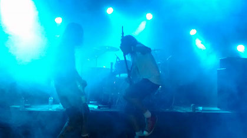
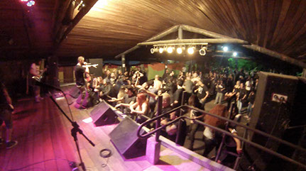
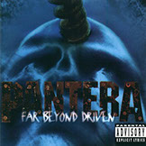
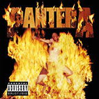

<!DOCTYPE html>
<html class="html" lang="pt-BR">
 <head>

  <script type="text/javascript">
   if(typeof Muse == "undefined") window.Muse = {}; window.Muse.assets = {"required":["jquery-1.8.3.min.js", "museutils.js", "jquery.watch.js", "jquery.musepolyfill.bgsize.js", "jquery.scrolleffects.js", "museredirect.js", "index.css"], "outOfDate":[]};
</script>
  
  <script src="scripts/museredirect.js?3899419633" type="text/javascript"></script>
  
  <script type="text/javascript">
   Muse.Redirect.redirect('desktop', '', 'phone/index.html');
</script>
  
  <meta http-equiv="Content-type" content="text/html;charset=UTF-8"/>
  <meta name="generator" content="2015.0.2.310"/>
  <title>Vulgar Pantera Tribute</title>
  <link media="only screen and (max-device-width: 370px)" rel="alternate" href="http://index.com/phone/index.html"/>
  <!-- CSS -->
  <link rel="stylesheet" type="text/css" href="css/site_global.css?4039346591"/>
  <link rel="stylesheet" type="text/css" href="css/index.css?4231171730" id="pagesheet"/>
  <!-- Other scripts -->
  <script type="text/javascript">
   document.documentElement.className += ' js';
</script>
   </head>
 <body>

  <div class="clearfix" id="page"><!-- column -->
   <div class="position_content" id="page_position_content">
    <div class="clearfix colelem" id="pu146"><!-- group -->
     <div class="clip_frame grpelem" id="u146"><!-- image -->
      
     </div>
     <div class="clip_frame grpelem" id="u116"><!-- image -->
      
     </div>
     <div class="clearfix grpelem" id="u164-14"><!-- content -->
      <p>Em uma época em que todos queriam ser como o Nirvana, o <span id="u164-2">Pantera</span> decidiu fazer um som cada vez mais pesado, direto e agressivo.</p>
      <p>&nbsp;</p>
      <p>Foi com o álbum “Vulgar Display of Power”, o mais vendido da banda, que o cenário do metal foi revolucionado. Os vocais gritados e o peso da guitarra de Dimebag deram início à uma nova era no gênero.</p>
      <p>&nbsp;</p>
      <p>A banda <span id="u164-10">Vulgar</span> faz tributo ao maior grupo de metal dos anos 90.</p>
     </div>
     <div class="clip_frame grpelem" id="u352"><!-- image -->
      
     </div>
     <div class="clip_frame grpelem" id="u474"><!-- image -->
      
     </div>
     <div class="clearfix grpelem" id="u480-7"><!-- content -->
      <p>A banda Vulgar foi fundada em 2009 por Tiago Jesus e Rodrigo Gonçalves. Após passar por algumas reformulações com os integrantes e um período de hiato, o grupo atingiu a plenitude e voltou a fazer shows.</p>
      <p>&nbsp;</p>
      <p>Ao longo dos anos a banda se apresentou em grandes casas de São Paulo como Blackmore, Kazebre, Aquarius, Ego Club além de alguns festivais em Guarulhos</p>
     </div>
     <div class="clearfix grpelem" id="u481-8"><!-- content -->
      <p>Baterista desde o começo de 2000 e professor a partir de 2010, Jean Forrer estudou com grandes nomes do rock/metal nacional. Entre eles: Ivan Busic (Dr. Sin), Fernando Schaeffer (Worst), Edu Garcia (John Wayne),</p>
      <p>Amílcar Christófaro (Torture Squad)</p>
      <p>e Jean Dolabella (Sepultura/ Indireto)</p>
     </div>
     <div class="clearfix grpelem" id="u482-8"><!-- content -->
      <p>Tiago começou a tocar em 1996 e teve como referência as bandas de metal como Judas Priest, Motörhead e Manowar. Estudou </p>
      <p>no Conservatório Municipal de Guarulhos e teve</p>
      <p>uma grande mudança musical ao ver Andreas Kisser executando &quot;Territory&quot; do Sepultura em um programa de televisão</p>
     </div>
     <div class="clearfix grpelem" id="u483-6"><!-- content -->
      <p>Começou a cantar em 2004 e já passou por diversas bandas de estilos variados. Com influências como Rob Halford, Warrel Dene, Phil Anselmo e Zack Stevens, Rodrigo </p>
      <p>vem evoluindo desde então. Partipou do concurso nacional para vocalistas de metal SOULSPELL onde foi um dos finalistas</p>
     </div>
     <div class="clearfix grpelem" id="u484-8"><!-- content -->
      <p>Influenciado pelo som do Black Sabbath, Eric Akune iniciou suas atividades como baixista no ano de 2000, quando formou sua primeira banda com um primo.</p>
      <p>Suas influências na formação musical vieram através de bandas como Black Sabbath, Rainbow, Motörhead e o</p>
      <p>próprio Pantera</p>
     </div>
     <div class="browser_width grpelem" id="u485-bw">
      <div id="u485"><!-- custom html -->
       
<iframe class="actAsDiv" width="100%" height="702" src="http://www.youtube.com/embed/08QcIHSZu0w?autoplay=0&loop=0&showinfo=0&theme=dark&color=red&controls=1&modestbranding=0&start=0&fs=1&iv_load_policy=1&wmode=transparent&rel=1" frameborder="0" allowfullscreen></iframe>

</div>
     </div>
     <a class="nonblock nontext clip_frame grpelem" id="u780" href="https://www.youtube.com/channel/UCyxFDQz0RPna_5YIh8eeKUg"><!-- image --></a>
     <a class="nonblock nontext clip_frame grpelem" id="u786" href="https://www.facebook.com/VulgaR-Pantera-Tribute-370303536378328/"><!-- image --></a>
    </div>
    <div class="clearfix colelem" id="pu272"><!-- group -->
     <div class="clip_frame grpelem" id="u272"><!-- image -->
      
     </div>
     <div class="browser_width grpelem" id="u192-bw">
      <div class="museBGSize" id="u192"><!-- column -->
       <div class="clearfix" id="u192_align_to_page">
        <div class="clip_frame colelem" id="u205"><!-- image -->
         
        </div>
        <div class="clearfix colelem" id="u398-4"><!-- content -->
         <p>A banda investe nas redes sociais como seu principal meio de comunicação com o público. Através de vídeos, fotos e imagens, faz a divulgação dos shows além de atualizar as notícias da banda.</p>
        </div>
        <div class="clearfix colelem" id="pu392"><!-- group -->
         <a class="nonblock nontext clip_frame grpelem" id="u392" href="https://www.facebook.com/VulgaR-Pantera-Tribute-370303536378328/"><!-- image --></a>
         <div class="clearfix grpelem" id="pu399"><!-- column -->
          <a class="nonblock nontext clip_frame colelem" id="u399" href="https://www.facebook.com/VulgaR-Pantera-Tribute-370303536378328/"><!-- image --></a>
          <a class="nonblock nontext clip_frame colelem" id="u405" href="https://www.facebook.com/VulgaR-Pantera-Tribute-370303536378328/"><!-- image --></a>
         </div>
        </div>
       </div>
      </div>
     </div>
     <div class="clip_frame grpelem" id="u275"><!-- image -->
      
     </div>
     <div class="clip_frame grpelem" id="u286"><!-- image -->
      
     </div>
     <div class="clip_frame grpelem" id="u291"><!-- image -->
      
     </div>
     <div class="clip_frame grpelem" id="u321"><!-- image -->
      
     </div>
     <div class="browser_width grpelem" id="u413-bw">
      <div id="u413"><!-- custom html -->
       
<iframe class="actAsDiv" width="100%" height="666" src="http://www.youtube.com/embed/bjEElHotX1k?autoplay=0&loop=0&showinfo=0&theme=dark&color=red&controls=1&modestbranding=0&start=0&fs=1&iv_load_policy=1&wmode=transparent&rel=1" frameborder="0" allowfullscreen></iframe>

</div>
     </div>
     <div class="browser_width grpelem" id="u417-bw">
      <div id="u417"><!-- column -->
       <div class="clearfix" id="u417_align_to_page">
        <div class="clip_frame colelem" id="u421"><!-- image -->
         
        </div>
        <div class="clearfix colelem" id="u803"><!-- group -->
         <div class="clip_frame ose_pre_init grpelem" id="u431"><!-- image -->
          
         </div>
         <div class="clip_frame ose_pre_init grpelem" id="u429"><!-- image -->
          
         </div>
         <div class="clip_frame ose_pre_init grpelem" id="u423"><!-- image -->
          
         </div>
         <div class="clip_frame ose_pre_init grpelem" id="u427"><!-- image -->
          
         </div>
         <div class="clip_frame ose_pre_init grpelem" id="u425"><!-- image -->
          
         </div>
        </div>
        <div class="clearfix colelem" id="pu433-12"><!-- group -->
         <div class="clearfix grpelem" id="u433-12"><!-- content -->
          <p>Cowboys from Hell</p>
          <p>Primal Concrete Sledge</p>
          <p>Psycho Holiday</p>
          <p>Cemetery Gates</p>
          <p>Domination</p>
         </div>
         <div class="clearfix grpelem" id="u434-14"><!-- content -->
          <p>Mouth for War</p>
          <p>A New Level</p>
          <p>Walk</p>
          <p>Fucking Hostile</p>
          <p>This Love</p>
          <p>Hollow</p>
         </div>
         <div class="clearfix grpelem" id="u435-10"><!-- content -->
          <p>Strength Beyond Strength&quot;</p>
          <p>5 Minutes Alone</p>
          <p>I'm Broken</p>
          <p>Slaughtered</p>
         </div>
         <div class="clearfix grpelem" id="u437-6"><!-- content -->
          <p>War Nerve</p>
          <p>Suicide Note, Pt. 2</p>
         </div>
         <div class="clearfix grpelem" id="u436-10"><!-- content -->
          <p>Hellbound</p>
          <p>Goddamn Electric</p>
          <p>Yesterday Don't Mean Shit</p>
          <p>Revolution Is My Name</p>
         </div>
        </div>
        <div class="clip_frame colelem" id="u489"><!-- image -->
         
        </div>
        <div class="clearfix colelem" id="u495-5"><!-- content -->
         <p><a class="nonblock" href="mailto:vulgar.pantera.tribute@gmail.com">vulgar.pantera.tribute@gmail.com</a></p>
        </div>
       </div>
      </div>
     </div>
     <div class="clip_frame grpelem" id="u462"><!-- image -->
      
     </div>
    </div>
    <div class="verticalspacer"></div>
   </div>
  </div>
  <!-- JS includes -->
  <script type="text/javascript">
   if (document.location.protocol != 'https:') document.write('\x3Cscript src="http://musecdn2.businesscatalyst.com/scripts/4.0/jquery-1.8.3.min.js" type="text/javascript">\x3C/script>');
</script>
  <script type="text/javascript">
   window.jQuery || document.write('\x3Cscript src="scripts/jquery-1.8.3.min.js" type="text/javascript">\x3C/script>');
</script>
  <script src="scripts/museutils.js?275725342" type="text/javascript"></script>
  <script src="scripts/jquery.watch.js?3999102769" type="text/javascript"></script>
  <script src="scripts/jquery.musepolyfill.bgsize.js?185257658" type="text/javascript"></script>
  <script src="scripts/jquery.scrolleffects.js?206645848" type="text/javascript"></script>
  <!-- Other scripts -->
  <script type="text/javascript">
   $(document).ready(function() { try {
(function(){var a={},b=function(a){if(a.match(/^rgb/))return a=a.replace(/\s+/g,"").match(/([\d\,]+)/gi)[0].split(","),(parseInt(a[0])<<16)+(parseInt(a[1])<<8)+parseInt(a[2]);if(a.match(/^\#/))return parseInt(a.substr(1),16);return 0};(function(){$('link[type="text/css"]').each(function(){var b=($(this).attr("href")||"").match(/\/?css\/([\w\-]+\.css)\?(\d+)/);b&&b[1]&&b[2]&&(a[b[1]]=b[2])})})();(function(){$("body").append('<div class="version" style="display:none; width:1px; height:1px;"></div>');
for(var c=$(".version"),d=0;d<Muse.assets.required.length;){var f=Muse.assets.required[d],g=f.match(/([\w\-\.]+)\.(\w+)$/),k=g&&g[1]?g[1]:null,g=g&&g[2]?g[2]:null;switch(g.toLowerCase()){case "css":k=k.replace(/\W/gi,"_").replace(/^([^a-z])/gi,"_$1");c.addClass(k);var g=b(c.css("color")),h=b(c.css("background-color"));g!=0||h!=0?(Muse.assets.required.splice(d,1),"undefined"!=typeof a[f]&&(g!=a[f]>>>24||h!=(a[f]&16777215))&&Muse.assets.outOfDate.push(f)):d++;c.removeClass(k);break;case "js":k.match(/^jquery-[\d\.]+/gi)&&
typeof $!="undefined"?Muse.assets.required.splice(d,1):d++;break;default:throw Error("Unsupported file type: "+g);}}c.remove();if(Muse.assets.outOfDate.length||Muse.assets.required.length)c="Some files on the server may be missing or incorrect. Clear browser cache and try again. If the problem persists please contact website author.",(d=location&&location.search&&location.search.match&&location.search.match(/muse_debug/gi))&&Muse.assets.outOfDate.length&&(c+="\nOut of date: "+Muse.assets.outOfDate.join(",")),d&&Muse.assets.required.length&&(c+="\nMissing: "+Muse.assets.required.join(",")),alert(c)})()})();/* body */
Muse.Utils.transformMarkupToFixBrowserProblemsPreInit();/* body */
Muse.Utils.prepHyperlinks(true);/* body */
Muse.Utils.resizeHeight()/* resize height */
$('#u192').registerBackgroundPositionScrollEffect([{"speed":[0,1],"in":[-Infinity,3296]},{"speed":[0,1],"in":[3296,Infinity]}]);/* scroll effect */
$('#u431').registerOpacityScrollEffect([{"fade":136,"opacity":20,"in":[-Infinity,6000]},{"opacity":100,"in":[6000,6000]},{"fade":93,"opacity":100,"in":[6000,Infinity]}]);/* scroll effect */
$('#u429').registerOpacityScrollEffect([{"fade":136,"opacity":20,"in":[-Infinity,6000]},{"opacity":100,"in":[6000,6000]},{"fade":0,"opacity":100,"in":[6000,Infinity]}]);/* scroll effect */
$('#u423').registerOpacityScrollEffect([{"fade":136,"opacity":20,"in":[-Infinity,6000]},{"opacity":100,"in":[6000,6000]},{"fade":0,"opacity":100,"in":[6000,Infinity]}]);/* scroll effect */
$('#u427').registerOpacityScrollEffect([{"fade":136,"opacity":20,"in":[-Infinity,6000]},{"opacity":100,"in":[6000,6000]},{"fade":0,"opacity":100,"in":[6000,Infinity]}]);/* scroll effect */
$('#u425').registerOpacityScrollEffect([{"fade":136,"opacity":20,"in":[-Infinity,6000]},{"opacity":100,"in":[6000,6000]},{"fade":0,"opacity":100,"in":[6000,Infinity]}]);/* scroll effect */
Muse.Utils.fullPage('#page');/* 100% height page */
Muse.Utils.showWidgetsWhenReady();/* body */
Muse.Utils.transformMarkupToFixBrowserProblems();/* body */
} catch(e) { if (e && 'function' == typeof e.notify) e.notify(); else Muse.Assert.fail('Error calling selector function:' + e); }});
</script>
   </body>
</html>
